Case study · SiDLY Healthcare · ongoing
SiDLY Health: one record, three people
SiDLY Health connects the people around a single visit: the care manager who plans it, the carer who makes it and the resident who receives it. I lead its UX/UI across the mobile apps and the web platform.
The challenge
One visit, three people, three apps that have to agree on the same data.
What I did
Led UX/UI for the mobile apps and the web platform, prototyped in React/TypeScript.
Signature move
Visits start and end with an NFC scan, so hours are settled from real time.
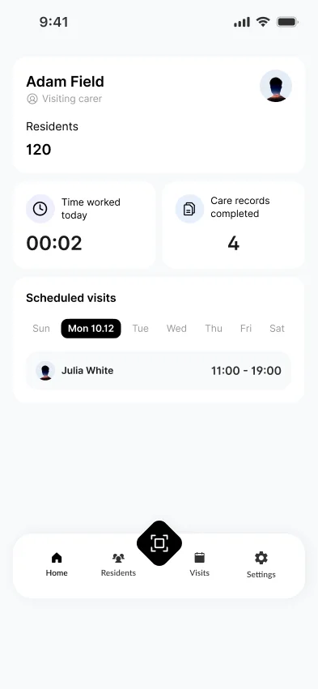
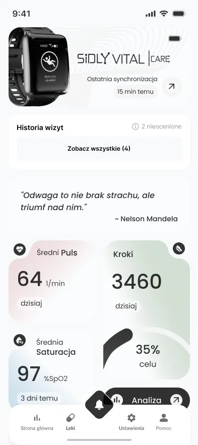
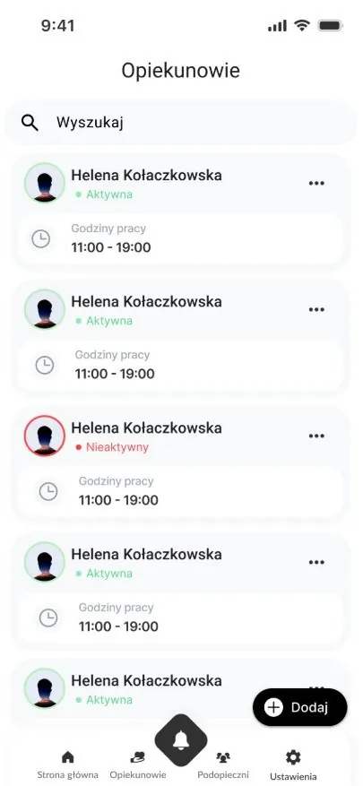
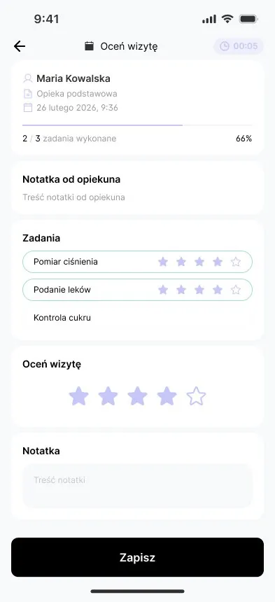
Three accounts on the same data
Care manager
Residents, carers, the visit schedule, alarms, devices and reports.
Carer
The Planner: today's visits, tasks and the care card for each resident.
Resident
Health readings, medication, upcoming visits, visit ratings and SOS.
A visit belongs to all three. When the carer finishes it, it appears in the resident's history, ready to be rated, and in the manager's record of work. An alarm handled by the manager disappears from every view.
The care manager's mobile app
Care managers run their team from the phone as much as from the desk. This flow covers the carers: who they look after, when they work and what they can access.
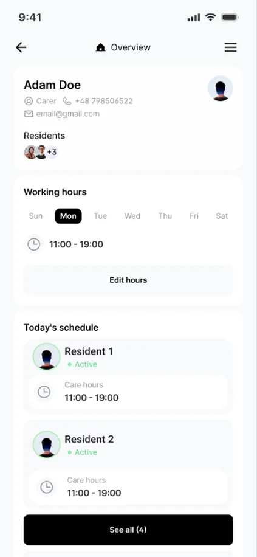
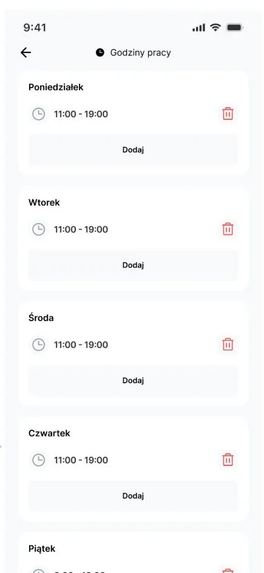
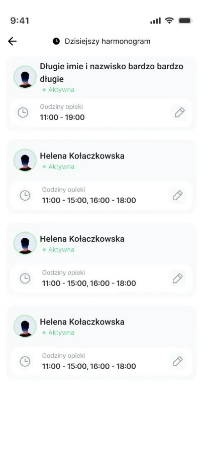
The carer's Planner
Carers use the Planner on their phone during the visit. The flow is built around the scan: a visit starts when the phone touches the resident's tag and ends the same way.
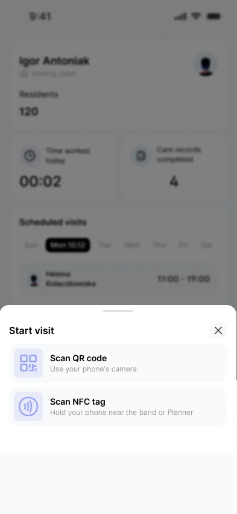
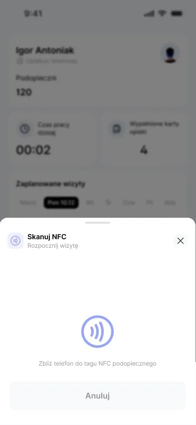
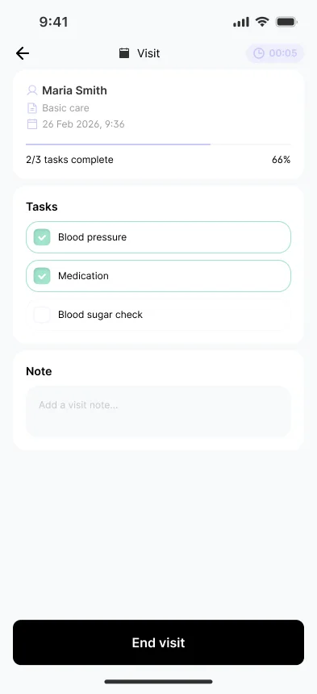
The resident's app
The resident sees the same visits from the other side: who came, what was done, and a place to say how it went.
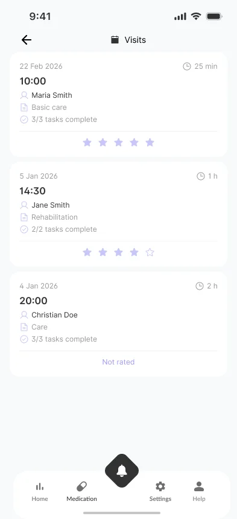
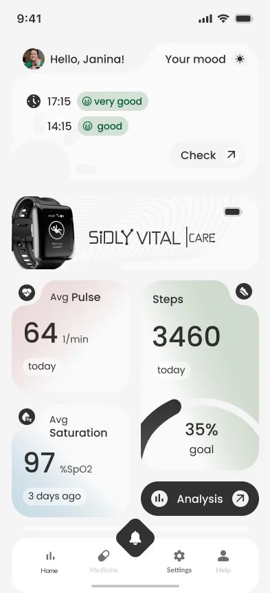
The web platform
At the desk the same data gets more room. The manager plans and settles the team's work, carers follow their visits from a laptop, and residents see their own record.
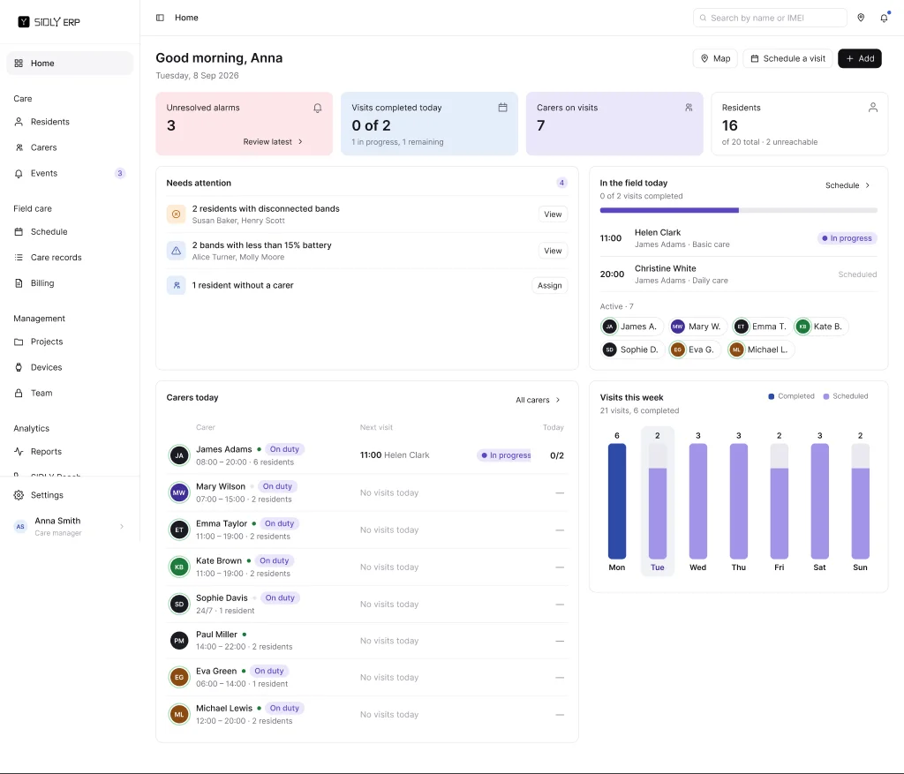
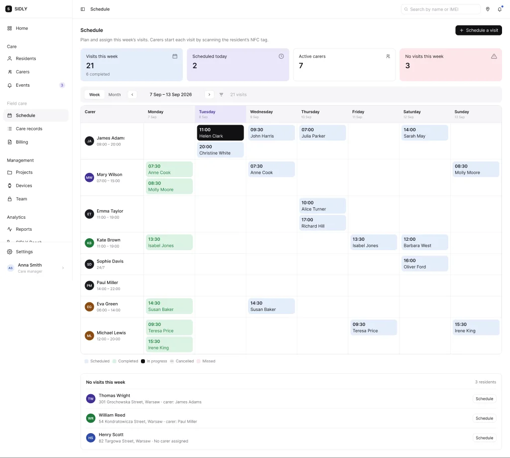
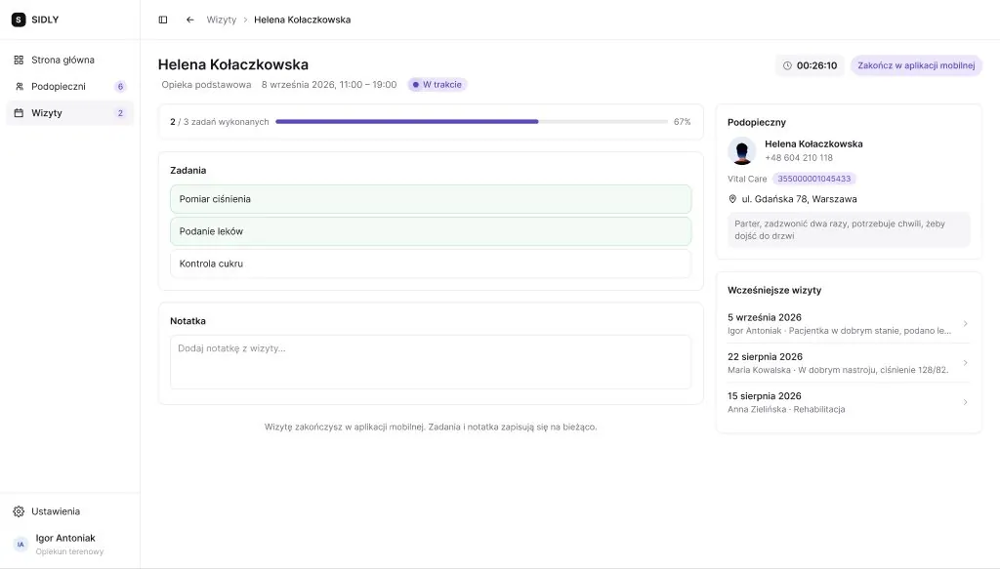
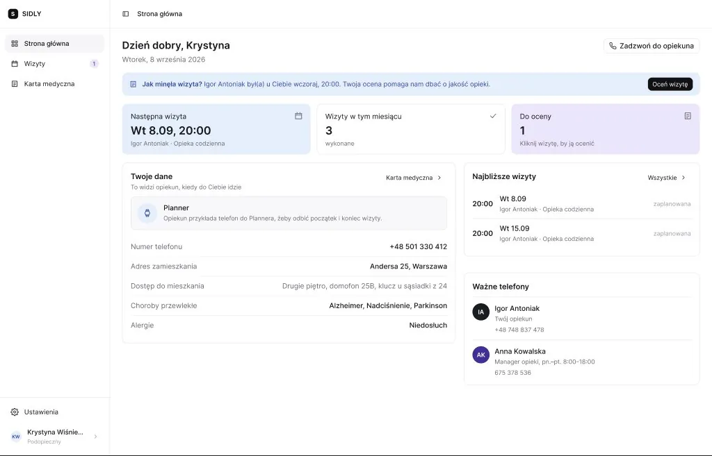
The product ships in Polish, so the screens are in Polish. All names and data are test data.
Key design decisions
A visit starts with a scan
The carer starts and ends each visit by scanning the resident's NFC tag with their phone. Work time is recorded as it happened, not as it was planned, and carers' hours are settled from it.
The care card has a lifetime
Before a visit the care card is the plan. During the visit the carer fills it in. After the visit it becomes the record that the resident and the office read, so it is locked as it was when the visit ended.
The resident's home screen answers three questions
Am I all right, what do I need to do today, and when is someone coming? Large text, large touch targets, few words, and SOS always on top.
Urgent first, then the day
The manager's dashboard opens with what needs a reaction, then today's visits in the field, the week ahead and equipment. Each block leads to the screen where that issue gets solved.
Recurring visits stay ordinary visits
A series is a set of normal visits that share a tag, so any single one can be moved or cancelled without breaking the rest.
Prototype in code, not in frames
The flows are built as a clickable React/TypeScript prototype with realistic test data, so managers and carers test whole visits instead of single screens.